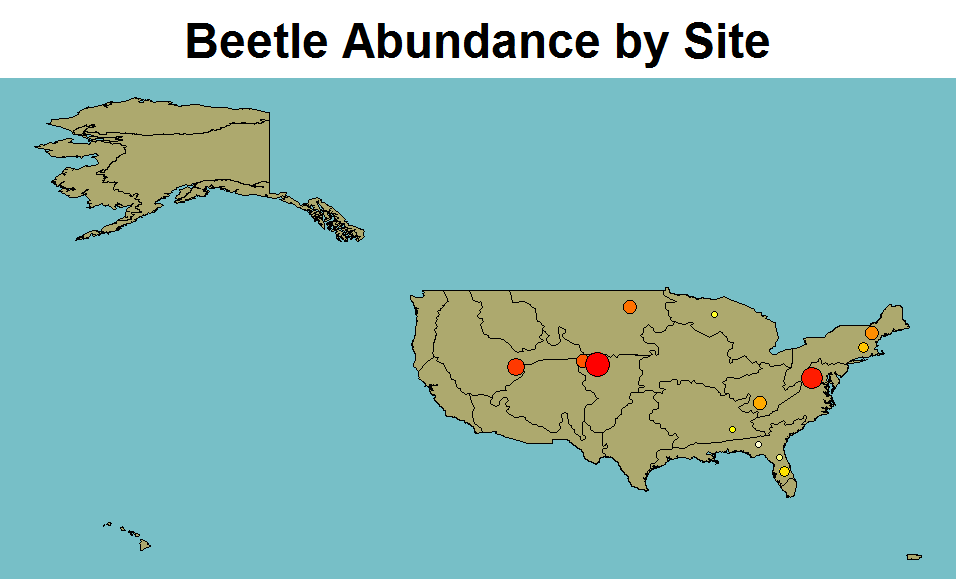
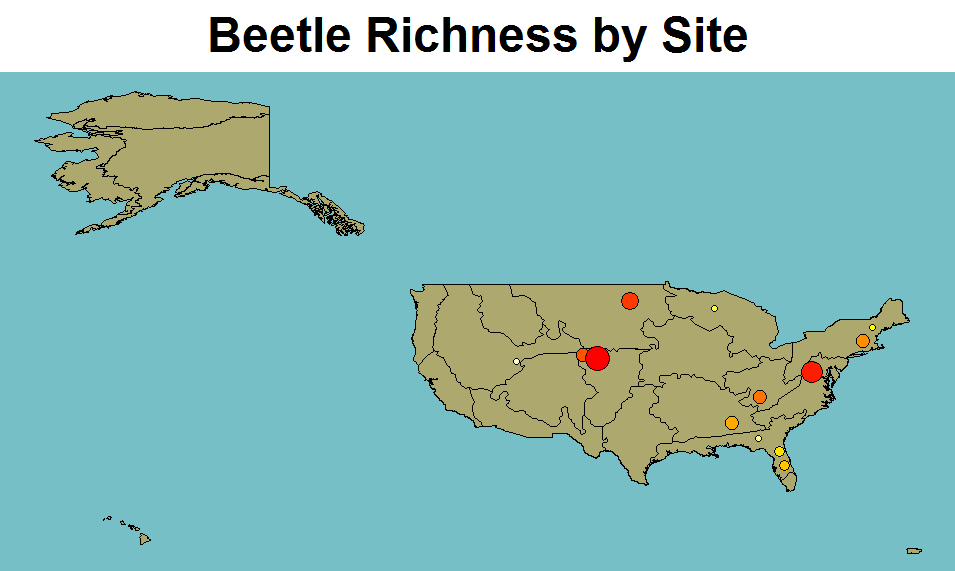
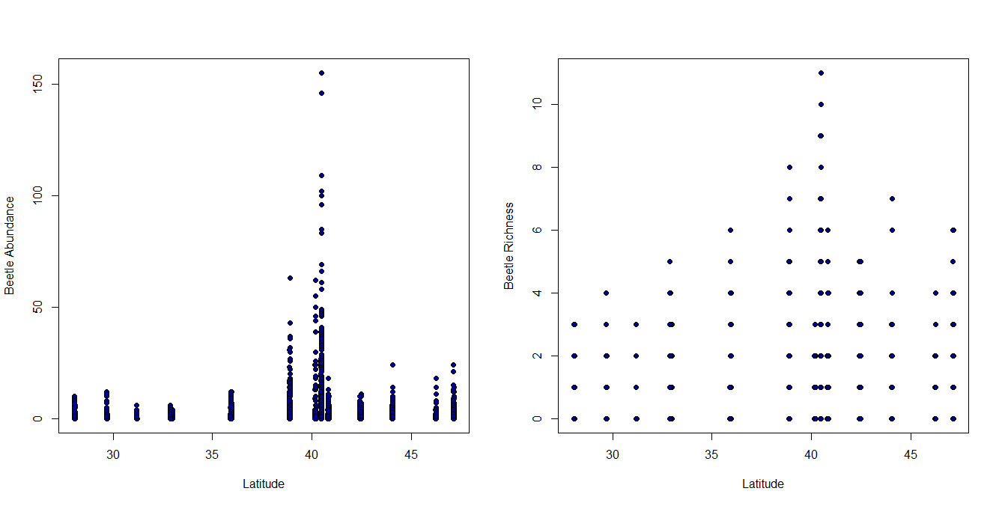
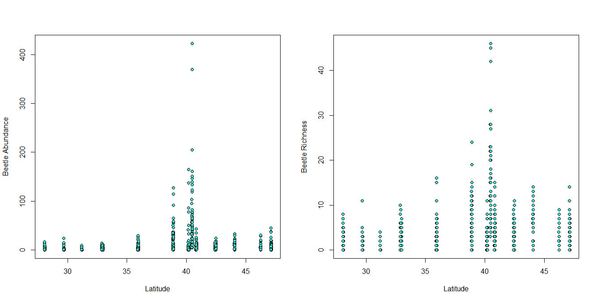
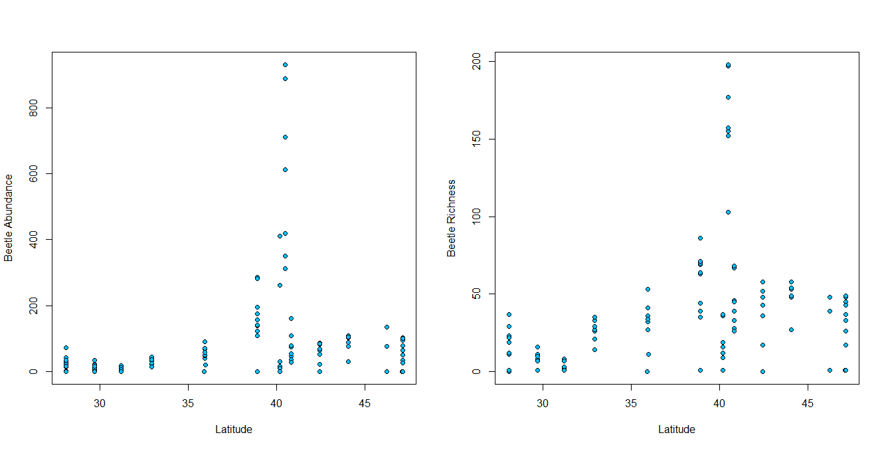
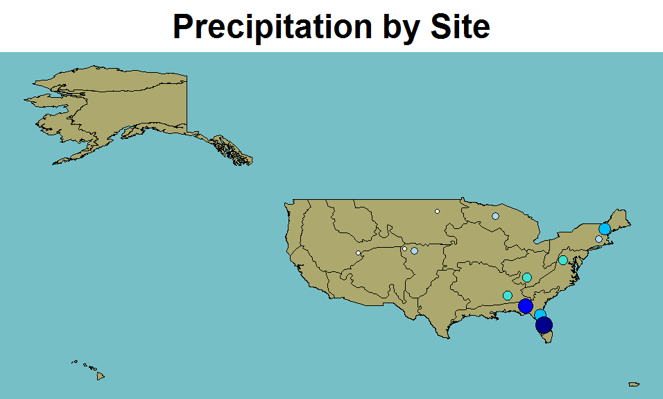
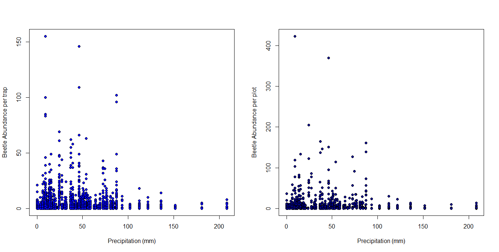
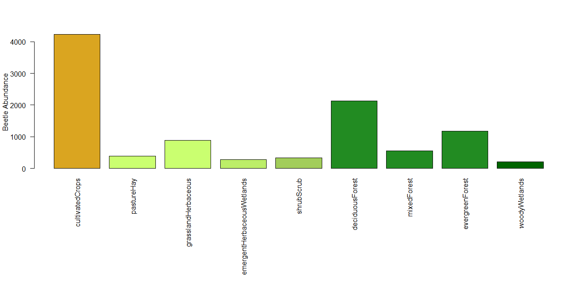
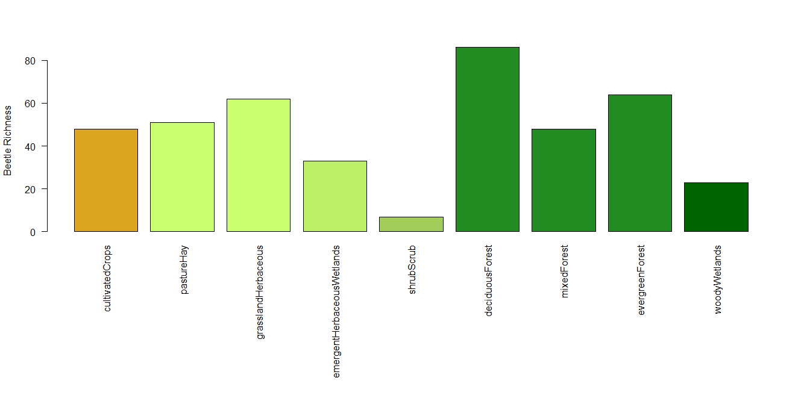

A NEON #WorkWithData Event
Date: 15 November 2015 - Entomological Society of America Meeting
Location: Minneapolis, Minnesota - Minneapolis Convention Center Rm 208 AB
Background Materials
Things to Do Before the Workshop
This is a demonstration based brown-bag and thus nothing is required to attend this workshop! However, the data used in the workshop are available to download for further exploration.
Other Resources
Many resources demonstrating the use of different NEON data products are available at NEON data skills.org. New material is being added all the time, so check back frequently!
Download The Data
Workshop Instructor
- Katherine LeVan @klevan, Staff Scientist, NEON, Inc
#WorkWithData Hashtag
Please tweet using the hashtag: #WorkWithData" during this workshop! Also you can tweet at @neoninc!
SCHEDULE
Please note that we are still developing the agenda for this workshop. The schedule below is subject to change.
| Time | Topic |
|---|---|
| 1:00 | About NEON |
| 1:30 | A look at Carabid patterns and trends |
| 2:00 | Partner projects |
| 2:45 | Q&A |
| 3:00 | ------- Wrap Up! ------- |
About the Data
The carabid data that we will use for this brown-bag were collected at 13 sites in 2014. NEON carabid data are stored in three tables: field collection data, sorting data and pinning data.
Field Collection Data
Contains information related to the location of each trap (i.e., latitude, longitude, NLCD class) and metadata about the sampling event (i.e., when traps were set, 'setDate'; the date of trap collection, 'collectDate'; the number of days a given trap was in the field, 'daysOfTrapping'). Unique collection events have a unique sampleID (format = plotID.trapID.collectDate).

Sorting Data
Contains information about what specimens were found in traps. Sample types include vertebrate bycatch (herptiles = 'vert bycatch herp'; mammals = 'vert bycatch mam'), non-Carabidae invertebrate bycatch (labelled 'invert bycatch'), and all information about carabids. Older data (2014 and prior) divide Carabid data into two categories: 'common carabid', for which all taxonomic and abundance data is listed in the sorting dataset, and 'other carabid', a catch-all category indicating that the relevant taxonomic and abundance information for specimens with that sampleID is provided in the pinning dataset. Unique records have a unique 'associatedSampleID' (format = plotID.trapID.collectDate.taxonID.tubeID; records where taxonomic information is unknown use shorthand codes based on sampleType-'ib' for invertebrate bycatch, 'vb' for vertebrate bycatch, 'cc' for common carabid, 'oc' for other carabid).

Pinning data
Contains information about all carabids that were pinned or pointed. Each sample in the pinning dataset has a unique identifier (individualID). The information in the pinning table are traceable to the sorting data via the a sampleID. Every 'sampleID' in the pinning data matches an 'associatedSampleID' in the sorting dataset.

Data Format
When downloaded from the portal, all data is divided by site. To look at all 13 sites from 2014 will require downloading 39 files (one field, sorting and pinning data for each site) and combining the datasheets across all sites for each type of data (i.e., field, sorting and pinning). I've included an R script that combines and cleans the 2014 data for easy use (available here: data-cleanup.R) and the 39 original data files (located here: portal download). However, for those that just want the csv files that are the end result, I have provided them here.
Looking at the data
Field Collection
A brief look at the data shows that most sites collect all 40 traps on a 14 day interval; 81% of traps were collected on the 14 day cycle exactly and 62% collected absolutely every trap during a collection bout. Deviations were minor and in more than 85% of cases, field operations staff were able to reach at least 8 of 10 plots.
par(mfrow=c(1,2))
hist(bet_field$daysOfTrapping,xlim=c(0,30),col="black",main="Typical sampling interval",xlab="Days of trapping")
bet_field %>% count(siteID,boutNumber) -> numTrapsDeployed
hist(numTrapsDeployed$n,xlim=c(0,40),col="black",main="Typical number of traps deployed",xlab="Number of traps per site per bout")

Trends and Patterns
Does latitude explain beetle abundance or richness? The relationship can be examined at the level of the trap, the plot or the site; but the pattern may be driven by substantial variation seen in the middle latitudes.
plot(Dmap,col="#ADA96E",bg='#77BFC7',main='Beetle Abundance by Site',cex.main=3)
sites <- sites[order(sites[,'numCarabidsCaught']),]
sites$intensity <- heat.colors(13)[13:1]
sites$cex <- c(rep(1,4),rep(1.5,2),rep(2,4),rep(2.5,1),rep(3,1),rep(3.5,1))
points(sites$decimalLongitude,sites$decimalLatitude,bg=sites$intensity,cex=sites$cex,pch=21)

plot(Dmap,col="#ADA96E",bg='#77BFC7',main='Beetle Richness by Site',cex.main=3)
sites <- sites[order(sites[,'beetleRichness']),]
sites$intensity <- heat.colors(13)[13:1]
sites$cex <- c(rep(1,4),rep(1.5,2),rep(2,4),rep(2.5,1),rep(3,1),rep(3.5,1))
points(sites$decimalLongitude,sites$decimalLatitude,bg=sites$intensity,cex=sites$cex,pch=21)

Plotting latitudinal gradients of beetle abundance and richness at the trap level
plot(bet_field$decimalLatitude,bet_field$beetleAbundance,xlab='Latitude',ylab='Beetle Abundance',pch=21,bg="darkblue")
plot(bet_field$decimalLatitude,bet_field$beetleRichness,xlab='Latitude',ylab='Beetle Richness',pch=21,bg="darkblue")

Plotting latitudinal gradients of beetle abundance and richness at the plot level
plot(bet_field_plot$decimalLatitude,bet_field_plot$beetleAbundance,xlab='Latitude',ylab='Beetle Abundance',pch=21,bg="turquoise")
plot(bet_field_plot$decimalLatitude,bet_field_plot$beetleRichness,xlab='Latitude',ylab='Beetle Richness',pch=21,bg="turquoise")

Plotting latitudinal gradients of beetle abundance and richness at the bout level
plot(bet_field_bout$decimalLatitude,bet_field_bout$beetleAbundance,xlab='Latitude',ylab='Beetle Abundance',pch=21,bg="deepskyblue")
plot(bet_field_bout$decimalLatitude,bet_field_bout$beetleRichness,xlab='Latitude',ylab='Beetle Richness',pch=21,bg="deepskyblue")

Precipitation and beetle distributions
Precipitation was not homogeneous and largely fell in the southern and eastern US. Patterns of beetle abundance varied accordingly.
plot(Dmap,col="#ADA96E",bg='#77BFC7',main='Precipitation by Site',cex.main=3)
sites <- sites[order(sites[,'prcp']),]
sites$intensity <- c(rep('white',3),rep('lightblue',3),rep('turquoise',3),rep('deepskyblue',2),'blue','darkblue')
sites$cex <- c(rep(1,3),rep(1.5,3),rep(2,3),rep(2.5,2),rep(3,1),rep(3.5,1))
points(sites$decimalLongitude,sites$decimalLatitude,bg=sites$intensity,cex=sites$cex,pch=21)

plot(bet_field$prcp,bet_field$beetleAbundance,xlab='Precipitation (mm)',ylab='Beetle Abundance per trap',bg='blue',pch=21)
plot(bet_field_plot$prcp,bet_field_plot$beetleAbundance,xlab='Precipitation (mm)',ylab='Beetle Abundance per plot',bg='darkblue',pch=21)

Habitat and beetle distributions
NLCD class is an included variable describing the habitat in which traps are embedded. Habitat type certainly seems to influence observed abundance and (to a lesser extent) richness.
par(mar=c(15,4.1,4.1,2.5))
nlcd$color <- c('goldenrod',rep('darkolivegreen1',2),'darkolivegreen2','darkolivegreen3',rep('forestgreen',3),'darkgreen')
barplot(nlcd$beetleAbundance,names.arg=nlcd$types,col=nlcd$color,ylab="Beetle Abundance",xlab="",las=2)
barplot(nlcd$beetleRichness,names.arg=nlcd$types,col=nlcd$color,ylab="Beetle Richness",xlab="",las=2)
 